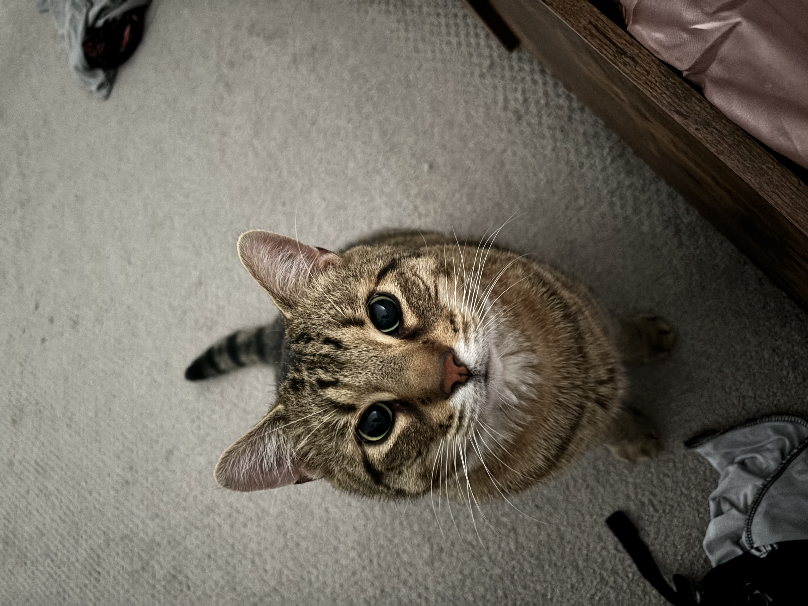
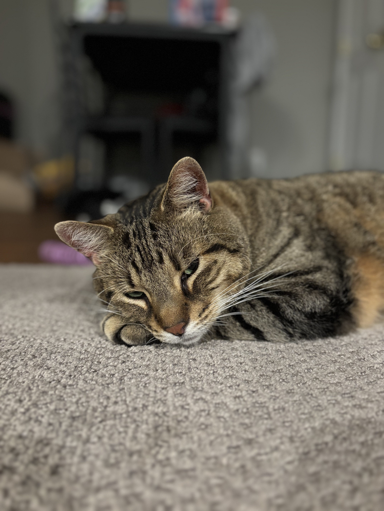

Nutter Butter
AKA: Nutty Boy

The Nutty Boy Files
- 🎂 Birthday: January 28, 2021
- 🧮 Age: Calculating...
- 😴 Occupation: Sleeping
- 😱 Biggest fear: Seeing the bottom of his food bowl
- ❤️ Allegiance: Momma
Nutter Butter is a big, lazy boy who considers sleeping a full-time career. Most of the time, he's perfectly content relaxing and making sure nobody forgets to refill his food.
But sometimes... the zoomies activate.
The Shower Curtain Situation
One day, Nutter Butter decided the bathroom sink was apparently not exciting enough.
He launched himself from the sink directly onto the shower curtain.
Moments later, he was hanging from the shower rod by his two front paws while his back paws kicked through the shower curtain.
After looking up to figure out what was happening, there he was:
Nutter Butter. Suspended in the air. Holding on for dear life.
⭐ Athletic ability: questionable.
⭐ Commitment: 10/10.
